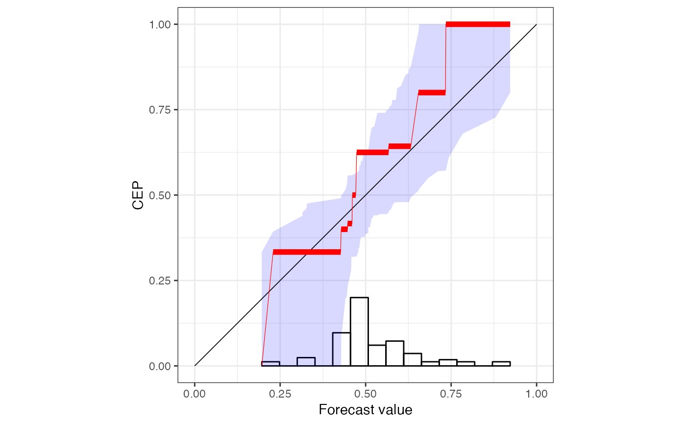
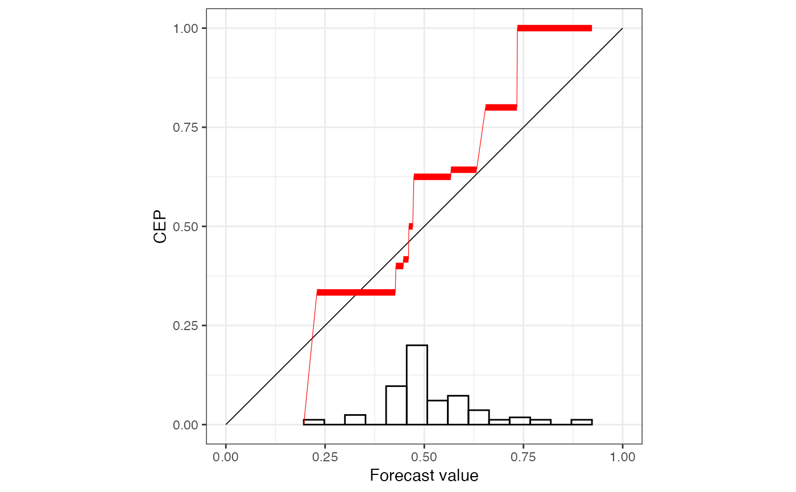

Documentation of the 'reliabilitydiag' object, and its constructors.
reliabilitydiag( ..., y = NULL, r = NULL, tol = sqrt(.Machine$double.eps), xtype = NULL, xvalues = NULL, region.level = 0.9, region.method = NULL, region.position = "diagonal", n.boot = 100 ) reliabilitydiag0(y)
| ... | objects to be coerced to |
|---|---|
| y | a numeric vector of binary response values in {0, 1} to be predicted. |
| r | an object inheriting from the class |
| tol | accuracy when comparing |
| xtype | a string specifying whether the prediction values should be
treated as |
| xvalues | a numeric vector of possible prediction values;
values in |
| region.level | a value in (0, 1) specifying the level at which consistency or confidence regions are calculated. |
| region.method | a string specifying whether |
| region.position | a string specifying whether consistency regions
around the |
| n.boot | the number of bootstrap samples when
|
reliabilitydiag returns a 'reliabilitydiag' object,
which is a named list-type vector class with the attribute
y containing the values supplied to the input argument y,
that is, the numeric vector of response values to be predicted.
The length is given by the number of prediction methods detected from the
supplied objects.
reliabilitydiag0 returns an empty 'reliabilitydiag' object
with attribute y.
Each entry of a 'reliabilitydiag' object
(corresponding to a single prediction method)
is itself a list with the following entries
cases | a tibble of all predictions and observations. |
bins | a tibble of the characteristics of the PAV induced bins. |
regions | a tibble with lower and upper bounds of the pointwise consistency/confidence regions. |
xinfo | a list of characteristics of x. |
Each cases tibble comprises the forecast-observation pairs of the
given prediction method. It is arranged in increasing order of
x and has columns
case_id | an ID based on the original order of the predictions and observations. |
x | an original prediction (increasing order). |
y | an observation, corresponding to x. |
bin_id | an ID for the PAV-recalibration induced bins. |
CEP_pav | the unique PAV-recalibrated prediction
corresponding to bin_id. |
Each bins tibble contains PAV-recalibration information, and has
columns
bin_id | as in cases, with any ID only appearing
once. |
n | the number of predictions with a given bin_id. |
x_min | the smallest value of the predictions with the given
bin_id. |
x_max | the largest value of the predictions with the given
bin_id. |
CEP_pav | the unique PAV-recalibrated prediction
corresponding to bin_id. |
Each regions tibble contains the uncertainty quantification
information, and has columns
x | an original prediction, with any value only appearing once. |
lower | the lower bound of the consistency/confidence
region at x. |
upper | the upper bound of the consistency/confidence
region x. |
n | the number of predictions with a value of x. |
level | the level of the consistency/confidence regions. |
method | the method used to calculate the consistency/confidence region. |
position | "diagonal" for a consistency region, and
"estimate" for a confidence region. |
Each xinfo list has entries
type | the type of predictions, either "discrete"
or "continuous". |
values | the values supplied to xvalues. |
reliabilitydiag constructs and returns an object inheriting from the
class 'reliabilitydiag'.
Each object passed via ... is
coerced by the methods described in as.reliabilitydiag,
and then concatenated by c.reliabilitydiag.
reliabilitydiag0 constructs an empty 'reliabilitydiag' object
from the response values.
If any of the arguments region.level, region.method,
or region.position is NA, then the uncertainty quantification
in terms of consistency/confidence regions is skipped.
Consistency regions are determined under the assumption of calibration of
the original predictions, that is, perfectly reliable forecasts such that
\(P(Y = 1|X) = X\).
Consistency regions are therefore positioned around values on the diagonal
(set region.position to "diagonal").
For confidence regions, calibration is enforced by using the PAV-recalibrated
predictions for uncertainty quantification, that is, it is assumed that
\(P(Y = 1|X) = PAV(X)\).
Confidence regions are therefore positioned around the estimated
conditional exceedence probability (CEP) line
(set region.position to "estimate").
When region.method is "resampling", then the original
forecast-observations pairs are bootstrapped n.boot times.
For each bootstrap sample, new observations are drawn under the respective
assumption (consistency or confidence).
Then PAV-recalibration with those new observations is performed on each
bootstrap sample, and pointwise
lower and upper bounds are calculated across the resulting CEP lines.
When region.method is "discrete_asymptotics" and
region.position is "diagonal",
a Gaussian
approximation is used assuming \(\sqrt{n} * (EST(x0) - x0)\) has variance
\(x0(1-x0)\), where
\(x0\) is an original prediction value,
\(n\) is the observed number of predictions with value \(x0\),
and \(EST(x0)\) is the estimated CEP value at \(x0\).
When region.method is "continuous_asymptotics" and
region.position is "diagonal",
a Chernoff approximation is used for
\((n * f(x0) / (4 * x0 * (1- x0)))^(1/3) * (EST(x0) - x0)\),
where \(x0\) is an original prediction value,
\(n\) is the total number of observations,
\(EST(x0)\) is the estimated CEP value at \(x0\),
and \(f(x0)\) is the estimated value of the density of the
original prediction values.
This density is estimated using the bde package: We use Chen's
beta kernel density estimator (see bde::bde()).
#> #>r#> 'brier' score decomposition (see also ?summary.reliabilitydiag) #> # A tibble: 1 x 5 #> forecast mean_score miscalibration discrimination uncertainty #> <chr> <dbl> <dbl> <dbl> <dbl> #> 1 ...1 0.153 0.0242 0.120 0.249# no consistency/confidence regions r1 <- reliabilitydiag(X, y = Y, region.level = NA)#> #>r1#> 'brier' score decomposition (see also ?summary.reliabilitydiag) #> # A tibble: 1 x 5 #> forecast mean_score miscalibration discrimination uncertainty #> <chr> <dbl> <dbl> <dbl> <dbl> #> 1 ...1 0.153 0.0242 0.120 0.249# specify predictions via existing reliabilitydiag r0 <- reliabilitydiag0(Y) identical(r1, reliabilitydiag(X, r = r0, region.level = NA))#> #>#> [1] TRUE# only observation information is used from existing reliabilitydiag X2 <- runif(100) r2 <- reliabilitydiag(X2, r = r, region.level = NA)#> #>r3 <- reliabilitydiag(X2, r = r0, region.level = NA)#> #>#> [1] TRUE